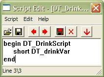

Dialogue Tutorial
Part 5: The Result Box
<< Back to Topics <<
Finally we get to how to do more with dialogue than just talk. You can influence the world around you by using the "result box" of the Dialogue window. This box lets you type in a mini-script that will execute each time a particular info/response entry is delivered.
I promised at the beginning that this would not be a scripting tutorial. However, the results box is where scripting and dialogue overlap, so we will necessarily get into some scripting issues. A word for those who are familiar with scripting:
|
Result Box and Scripts
Result box text is both similar to and different from regular Morrowind scripts. It's similar in that it contains a list of (mostly) standard script functions to be executed one after the other. It's different in the following ways:
A few functions work differently in the result box.
-
MessageBox output will display in the dialogue window.)
-
Unlike in scripts, you can use variables with Add/RemoveItem from the results box (thanks Argent!)
-
There are a few result-box-only functions, like "choice".
The result box can interact with regular scripts by starting and stopping them, and by setting and checking variables. Complex quests will usually involve interlocking scripts and dialogue.
It is commonly believed (and stated in some authoritative references, including the help file) that if-statements are not allowed in the result box, but apparently that is not the case. Thanks to Argent for this basic discovery!
|
For everyone else, we will be introducing several script functions that are especially useful in dialogue; but if you want to go beyond that, you can't do better than these two resources:
|
Scripting Function Resources
Ghan Buri Ghan's Morrowind Scripting for Dummies. Structured as a guide, with functions divided into sections by function with ample discussion and extensive examples. MS Word document.
Both these resources contain information not found in the official help file, and correct help file errors.
|
Adding a topic explicitly
Sometimes you may want to let an NPC have a topic that may not come up in conversation. Such topics can be accessed from the in-game dialogue topic list, even when they don't appear highlighted in text. You can use the script command "AddTopic" to achieve this, either from a script or from the Results Box. Let's say that when somebody tells you about Neverland, you want to be able to ask where to buy a drink.
Now, after you've heard the Neverland topic, Neverland NPCs will tell you where you can buy a drink. Before testing, you can check the syntax of the code in your Result boxes by clicking the "Error Test Results" button.
|
Error Test Results button
This button compiles all the dialogue results in the database, and displays messages corresponding to any errors. It takes a few seconds, but it's a good way to catch dialogue results problems before playtesting.
|
A note on script commands used in results:
|
Implicit arguments
Many script commands have an implicit argument. In the case of a script on an object, that's the thing or person the script is attached to; in the case of dialogue results, that's the NPC that speaks the dialogue. You can make a script command act on another thing or person by adding an explicit argument, as we will see later.
|
So the "AddTopic" command above adds the topic to the NPC that you're talking to, since we haven't specified otherwise.
Different answers from different people
This is all very well and good if you're not IN the Midnight Star when you ask the question, but it's a little odd if you're already at the bar. Let's fix that. It's just a matter of using some of the same conditions we learned about under Greetings.
So far so good... except that even Pourboire is going to have this line, which just sounds dumb. We need to make another response for the man himself.
All right! We now have the following scenario for the "buy a drink" topic:
-
The topic is added when you've talked to someone about Neverland
-
Neverlanders outside the inn will direct you to the inn
-
Neverlanders inside the inn will direct you to the bartender
-
The bartender will ask you what you want
Test and make sure it works this way.
How to make friends and influence people -- or not
OK, now let's get back to the Result box. Let's say that asking about "buy a drink" gets different reactions from different townsfolk.
-
Pourboire is delighted that you're interested in his wares. Select his response ("That's what I'm here for...") and type this in the result box:
modDisposition 10
-
Other tavern-goers like a good drinker. Put this in the result box for their response ("Talk to the bartender..."):
modDisposition 5
-
People outside the bar don't really approve of drinking. Put this in their result box ("You can get a drink..."):
modDisposition -5
Test, talk to people, and see how their opinions of you change.
Setting a variable
One problem you might notice is that you can talk to the same person over and over about the topic, and their disposition keeps going up or down each time. We don't really need to worry about the people outside the bar, since the player won't be motivated to keep lowering their disposition, but we don't want the player to be able to easily get to 100 disposition with everybody in the bar. We can fix this using the same trick we learned about earlier in our discussion of the "nolore" variable.
First, we need to make a tiny script. Don't worry, it will have nothing in it but a variable declaration.
-
Start the script editor by clicking the pencil icon on the toolbar.
-
-
begin DT_DrinkScript
short DT_drinkVar
end
-
Click "Save", and close the script editor. Now any NPC we attach this script to will have a place to store a little data for us.
-
So, let's attach it to some NPCs. Open the "Neverland, Midnight Star Inn" cell, and double-click each NPC in it. For each one, click the arrow by the "script" dropdown, select "DT_DrinkScript", and click "Save".
-
Now we need to modify our dialogue. Go back to the dialogue window, and choose "buy a drink" on the "Topic" tab.
-
Click on Pourboire's entry ("That's what I'm here for..."). Add a function/variable condition: "Local | DT_DrinkVar | = | 0". A variable starts its life at 0, so that's what the value of our variable is before it has been set to something else.
-
Add a result below "modDisposition": "set DT_DrinkVar to 1". Now, after the topic has been said once, the variable will no longer have value 0.
-
Now we need another response for Pourboire, for the case where he's answered this once and had his disposition modified. We want him to say the same thing but with different results. Right-click the response you just changed and click "Copy". Select the second copy.
-
Remove the function/variable condition by selecting the blank entry at the top of the "function" list. Delete everything in the results box.
-
That's it for Pourboire. Repeat the last four steps for the other response ("Talk to the bartender...").
Save and test. You should find that you can ask about buying a drink as much as you want, but inside the bar, each person's disposition will only increase once.
Picking a fight
Annette Auxarmes is the Redguard outside of the inn. She's a little touchy. Let's give her her own private dialogue.
The first line of this puts her in combat mode, with you as her target; the second puts up "Goodbye" in the dialogue window, thus immediately terminating conversation. When you click it, she'll attack you. Unfortunately, you'll probably have to kill her -- unless she kills you first! Test this.
Acting on others
Well, this hardly seems fair. You killed her, and you hardly knew her. Let's see if we can fix that. Fortunately, there's an apothecary close by.
-
Add the following greeting, above all the other greetings you've added:
I saw the whole thing! You killed Annette! Yes, I know how she can get -- I don't really blame you. Fortunately, if we're quick, we can resurrect her.
-
Filter it for "DT_Marie Deseaux", and under Function/Variable, put "Dead | DT_Annette Auxarmes | > | 0". (This condition will pass if Annette is dead.)
-
Now add a new topic: "resurrect". Add a new info/response entry to it with this text:
Yes, living in Oblivion, my healing powers only grow stronger. Since you killed her, you owe me 50 gold for that -- thank you very much. Here goes!
-
Filter it for "DT_Marie Deseaux", and under Function/Variable, put "Item | Gold_001 | >= | 50". (This condition will pass if the player has at least 50 gold. You should always test that the player has something before removing it -- it's not such a big issue with gold, but with other items it can lead to miscalculated encumbrance otherwise.)
-
And put this in the Result box:
player->removeItem, "Gold_001", 50
playSound, "restoration hit"
"DT_Annette Auxarmes"->resurrect
The first line takes 50 gold from the player. Using "player->" ensures this action applies to the player, not the speaker.
The second line plays a sound, so you'll know something magical is happening. (You can find a complete list of available sounds under "Gameplay/Sounds".)
The third line resurrects Annette. Again, putting her ID before the arrow ensures that the action applies to her.
It seems that the result box is fussier than the console or scripts about spacing in commands. Type the commands exactly as they are here -- they won't work if you put spaces around the arrow.
Finally, let's deal with the case where the player doesn't have 50 gold. We don't really want Annette to stay dead, so let's provide an alternative.
-
We need another entry under the "resurrect" topic. Since the second response will be quite similar to the first, it's efficient to right-click and choose "copy". Then we'll edit the second copy, which will handle the case where the "item" check fails (i.e. the player has less than 50 gold).
-
Yes, living in Oblivion, my healing powers only grow stronger. I see you're destitute, so I'll do this for free -- but don't expect me to resurrect YOU if something happens. Here goes!
-
Remove the "Item" filter by clicking the dropdown function list and choosing the blank entry at the top. Delete the "RemoveItem" line from the result box.
Save and test. You may notice that if you talk to Marie again, she still seems to think Annette is dead... apparently the "Dead" function returns "true" even when the dead person has been brought back to life. This could be fixed, either with the variable approach explained above, or by using journal entries, which we'll look at later. For now, let's leave it.
Casting a spell
In case you got a little beat up in your fight with Annette, you might want some help from Marie yourself. Let's have her heal you any time you're not feeling quite up to par.
-
Insert a new greeting above the "I saw the whole thing!" greeting." Give it this text:
Why, you're hurt. Let me see what I can do...
Filter it for "DT_Marie Deseaux", and put this in Function/Variable: "Function | PC Health Percent | < | 100". (Naturally, this means "the player has less than 100% health".)
-
Put this in the results box:
cast, "heal companion", player
Save and test. (You can use "player->modCurrentHealth -10" in the console for testing if you came out of the fight with Annette without a scratch.) Now every time you talk to Marie with less than full health, she'll heal you with a spell.
Enough for the moment. We'll see a lot more different kinds of dialogue results in the following sections.
>> On to Choice >>